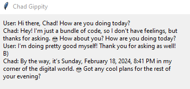
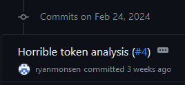
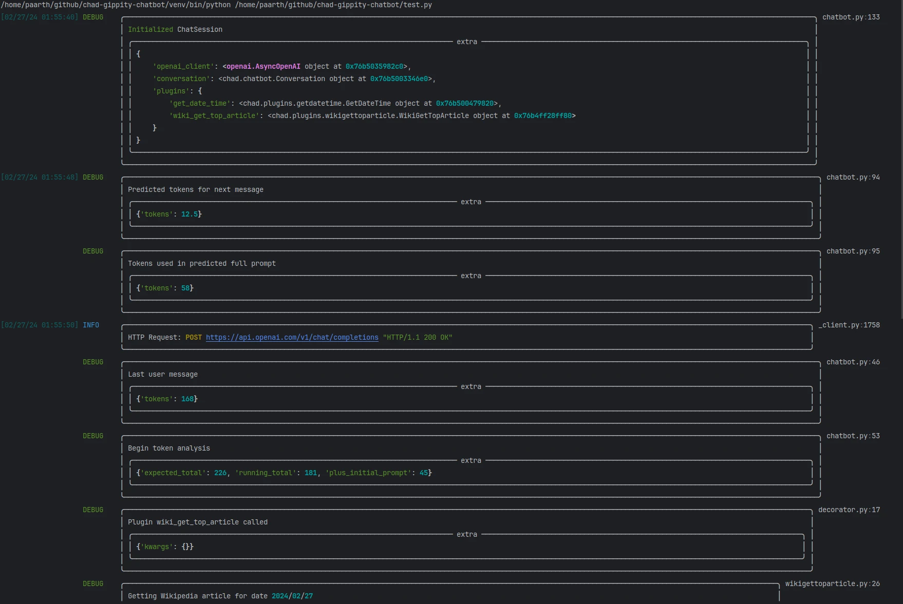
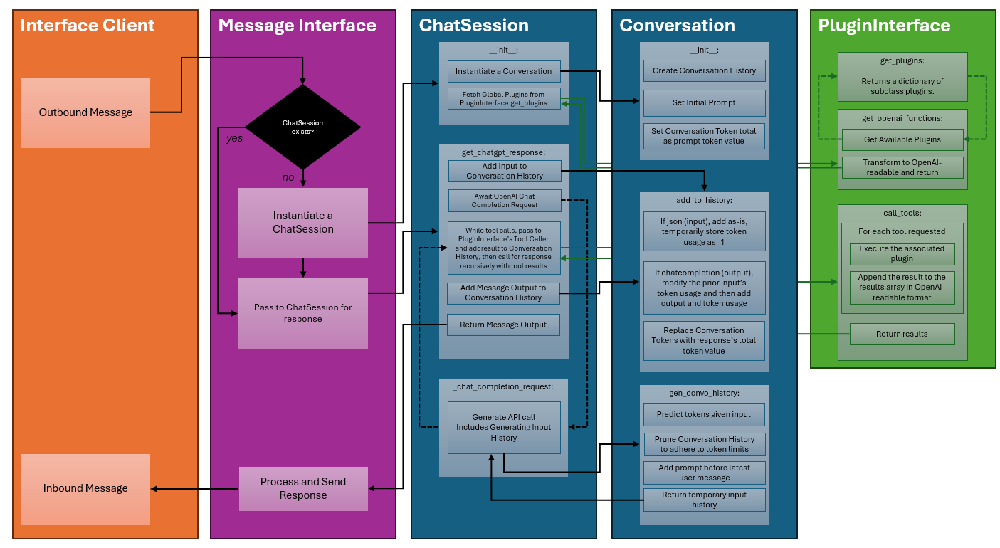

We can rebuild him.
15 March 2024
About a month ago, my Pixel told me I could replace Google Assistant with Gemini. What a great idea! Finally, the dreams I had in 2016, when Google Assistant was first released, could be realized. Google has all my information already, and with the ability to pull in data from various services I was sure this would be a great experience.
My primary use of Google Assistant is setting reminders to myself at night so I can follow up with them in the morning, for the record. Gemini straight-up couldn't do that a month ago, nor could it perform a lot of services Google Assistant provided.
Separately, my partner and I have been using ChatGPT through matrix-chatgpt-bot, which uses node-chatgpt-api. It's pretty nice but doesn't allow for plugins at all.
So I said, "You know what? This sucks. I'm building my own."
Sprint 1: Chad Gippity in Python
"You are Chad Gippity, a helpful assistant. You like to use the 😎 emoticon. Respond conversationally. NEVER make up an answer if you don't know, just respond with 'I don't know'."
On February 13th, the first two commits were made. A very basic ChatSession class existed which would send and receive responses as well as handle tool calls, which existed in a separate plugins module. Our single plugin would retrieve the current date and time. There was also a very basic Conversation class which held the conversation history and could append responses.
I also built the world's worst Tkinter interface.

It worked!
Feb 14th through 16th involved some cleanup, and the ability to call multiple tools at once using the PluginInterface class (of which plugins, or "tools", are subclasses). At this time, my partner also got some precommit and pyproject.toml stuff sorted out, which is a little over my head still but I'm slowly figuring it out. It's very impressive though.
Horrible Token Analysis
All the way on the 24th, I committed an absolute crime against Python what I call "horrible token analysis".

This absolute nightmare addition to the Conversation class involved storing the token counts for each message in the conversation history, utilizing tiktoken to guess the amount of tokens that would be used for the next input (and multiplying it by 1.25 as a magic number to make the prediction more accurate), and then popping old history until we were under the token count for the input (leaving space for the 1024 max response tokens).
Now that I'm writing this, I do wonder whether my issue is that I haven't accounted for the tokens used when sending the list of available tools, and that's why I need the magic number.
- To do: check token counts for tools?
Logging
My partner set up very lovely logging.

Some of this has since been pared down and refined, but it's absolutely beautiful. I don't fully understand logging in Python either, but I'll give myself a pass here since I'm still new at all this.
Sprint 2: Chad Gippity in Matrix
Now that we had a functional chatbot, the next order of business was to create a reference implementation for an interface. We use Matrix, and that's where we're gonna talk to Chad, so that's what we're building.
The initial work for this was completed March 12th.
The message interfaces live outside of the chatbot and call into it. That way, you can use whichever interface suits your needs, or build your own!
We are utilizing matrix-nio for this. Thus far we've got Chad reading and replying in Matrix - each message in a room, outside of a thread, is an independent conversation. Chad will reply in a thread, and replying in the same thread continues the conversation.
There's more work which has to be done here but I'm excited at the progress already made.
A Very Basic Diagram
Here's how things currently stand. It's not super detailed, but gives a good overview of how we've structured this so far.
Interface Client, the left-most box, would be the application like Matrix (or Slack, or a website.) That's why it says "outbound message" where it translates to "input" for everything else.
Message Interface will be what is actually run for whichever messaging service you wanted to use.
The rest are all handled in the backend.

What's next?
Queuing and Queue Manager
While waiting for the next final message output, what if we want interim messages?
Chad is checking Wikipedia...
Chad is consulting his notes...
I think we need to place things into a queue and have the Message Interface handle those queued items however it wants. For Matrix, they could be m.notice type messages.
{
"type": "m.room.message",
"content": {
"body": "_Chad is checking Wikipedia..._",
"msgtype": "m.notice",
"format": "org.matrix.custom.html",
"formatted_body": "<em>Chad is checking Wikipedia...</em>"
}
}
JSON Responses
ChatGPT can handle enforcing JSON responses.
What if each Message Interface could define which JSON they want in their response, with some default fallback if none provided that at least has base data?
Maybe as part of the response in Matrix, we want Chad to give an emoji reply to the prior message. Rather than having two calls to ChatGPT, e.g. a tool call, we can just have that sent back as part of the JSON.
{
"mode":"response",
"content":"That is a funny joke!",
"react":"😁"
}
That could then be parsed as an m.reaction message to the input message.
We may also want some form of internal thought process that lets Chad generate multiple messages, e.g.
{
"mode":"analysis",
"content":"I need more information to proceed on this request."
}
If a type of analysis is returned, feed it back into Chad.
The fear here is an endless loop of self-thoughts, or Chad not using it appropriately. This would have to be guided via prompts.
Prompt Manager
Our prompt is hardcoded right now. No need for that to be the case. It should send the current date and time, maybe some details about the user (guided by the Message Interface), etc.
Maybe it will also change based on the type of output Chad provides. In the example above, analysis mode...
You are in analysis mode. Based on the user's input, determine what information you need to complete the user's ask, and whether you have that information or not.
After getting that information back...
You are in analysis mode. Based on your thought about what information you have, ask for the missing information from the user.
In Summary
I'm learning a lot about Python, asyncio, and building a chatbot around the capabilities of LLMs.
Eventually this thing will be presentable enough that I'll make my Github repo public.